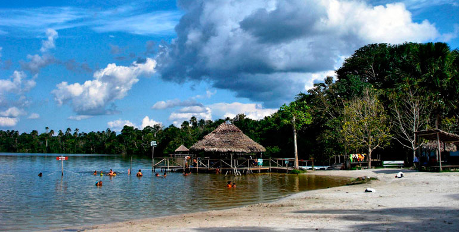
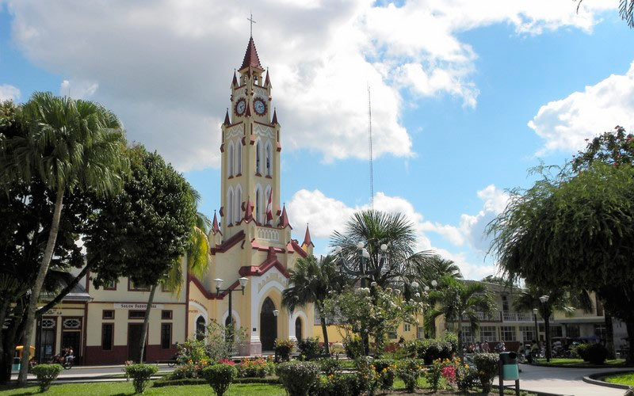

|  | Complejo turistico de Quistococha en LoretoEl Complejo Turístico de Quistococha, también conocido como Parque Turístico de Quistococha, es un complejo de entretenimiento en la ciudad de Iquitos, Perú. Ubicado en la región sureña de Iquitos Metropolitano, es el único parque turístico del departamento de Loreto y está considerada oficialmente como un «Parque Turístico Nacional» dentro el Sistema de Reservas Turísticas Nacionales del Perú. El complejo está contiguo a la ruta departamental LO-103 y es un notable atractivo turístico para el dinamismo de Iquitos. Es un lugar perfecto para disfrutar de unas hermosas vacaciones, permite disfrutar del paisaje de la selva, descansar y divertirse. |
|
 |
Plaza de Armas de IquitosPlaza del Comercio o de Iquitos es un espacio urbano en el centro de la ciudad de Iquitos. El tamaño que ocupa es de una manzana urbana (de acuerdo al tamaño del territorio de la ciudad). Es el punto turístico de Iquitos más vistoso para público extranjero. Además, es sede de grandes desfiles cívicos y distintos actos oficiales. Zonas que se encuentran en la plaza mayor de Iquitos. |